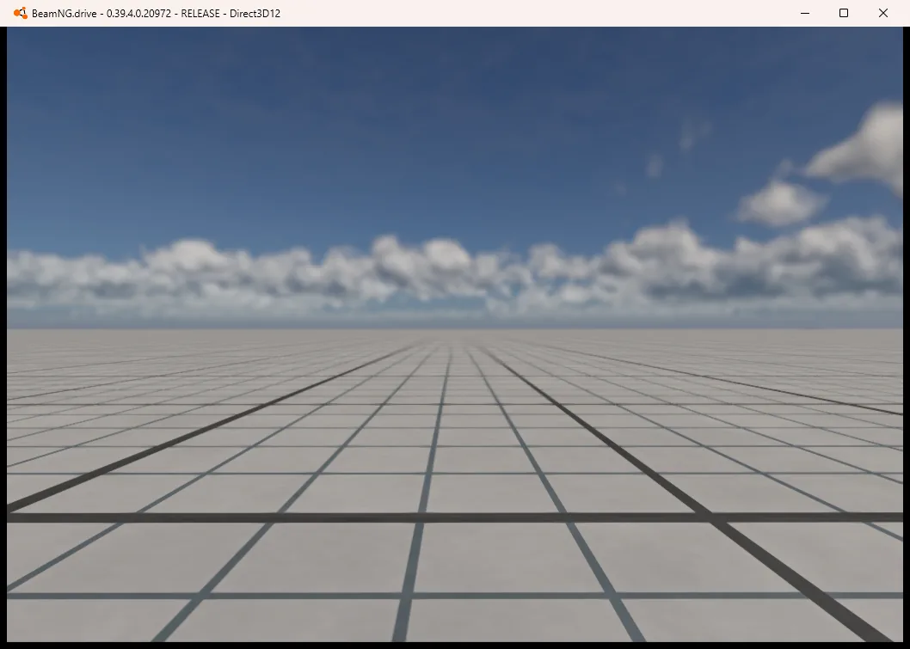

BUILD
Software / AI / Projects
01 / HOME
Electronic Information Engineering Student
AI / Coding / Sim Racing / Hi-Fi
把想法，快速做成能跑的作品。
BUILDDRIVELISTEN

02 / RACING
Sim Racing / Autonomous Driving

基于 BeamNG 的自动驾驶实验项目，采用感知 / 决策 / 控制的分层架构。
An autonomous driving experiment built inside a racing simulator.
PYTHON / COMPUTER VISION / VEHICLE CONTROL / BEAMNG
03 / PROJECTS
文字目录 + 项目实拍
悬停或聚焦查看对应画面
04 / HI-FI
Music / Audio / Listening
Listen closer.
Music is another way of paying attention to details.

音频监听与可视化工具：自动采集电脑正在播放的声音，实时显示频谱与波形。
Audio visualization and listening analysis tool.
PYTHON / WASAPI LOOPBACK / FFT / NUMPY / CUSTOMTKINTER
05 / ABOUT
Electronic Information Engineering student interested in AI, software, simulation, electronics and audio.
华南农业大学电子信息工程大二在读，现居广州。喜欢把技术、赛车和声音这些兴趣， 做成真正能运行、能分享的东西。
BUILD
Software / AI / Projects
DRIVE
Sim Racing / BeamNG / Autonomous Driving
LISTEN
Hi-Fi / Music / Audio
TOOLBOX